FOTOĞRAFLAR
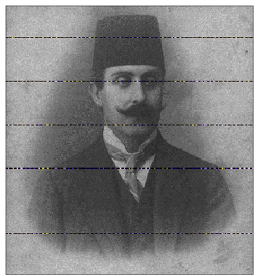
Bahattin Şakir
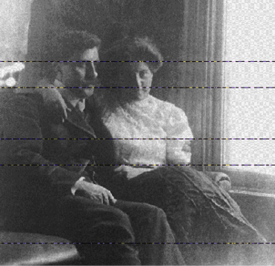
Bahattin Şakir’in Cenan Hanım’la evlendiği günlerde
çekilen fotoğrafları.
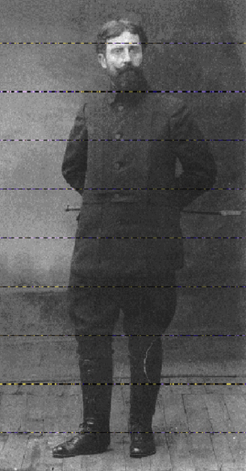
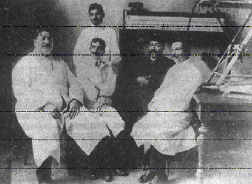
Bahattin Şakir, doktor arkadaşlarıyla.
Bahattin Şakir (en sağda), hocası Dr. Ali Rüştü Paşa
(sağdan ikinci), onun sağında Dr. Kemal Cenap (Berksoy)
ve onun yanında Dr. Talha Bey.
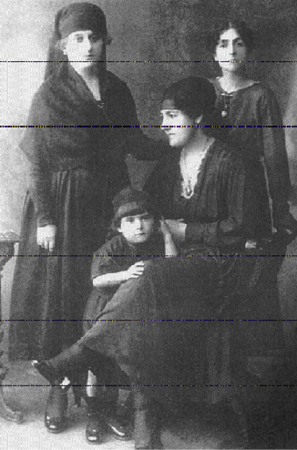
Dr. Bahattin Şakir’in eşi Cenan Hanımefendi ile oğlu Alp. Cenan Hanım’ın ilk eşi Tahir Paşa’dan olma kızı İsmet hanım (solda) ve emektar evlatlıkları Bahtiyar Hanım.
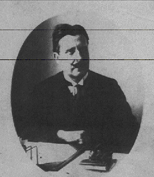
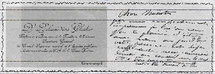
Bahattin Şakir’in kartviziti (Prof. Terzioğlu arşivi.)
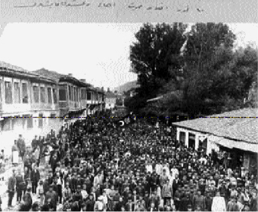
Devrim kutlamaları (Manastır, 1908).
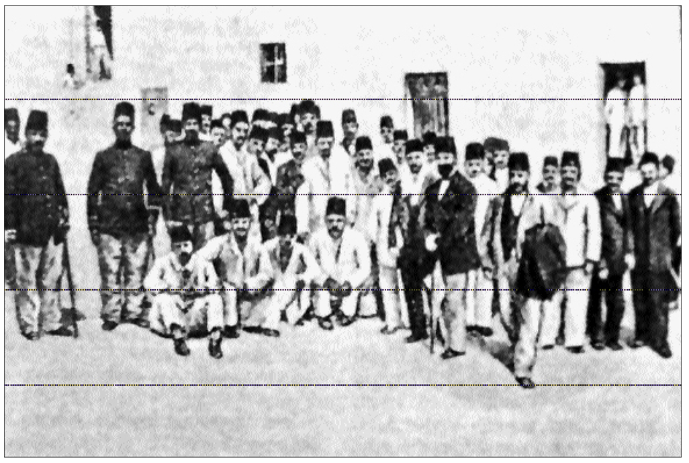
1. Jön Türk Kongresi delegeleri (Paris, 1902).
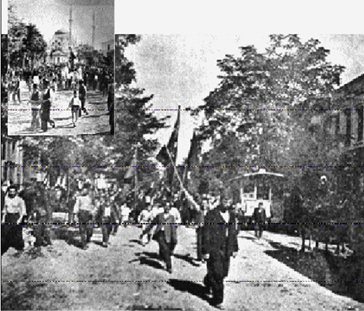
İstanbul’da 1908 Devrimi kutlamaları.
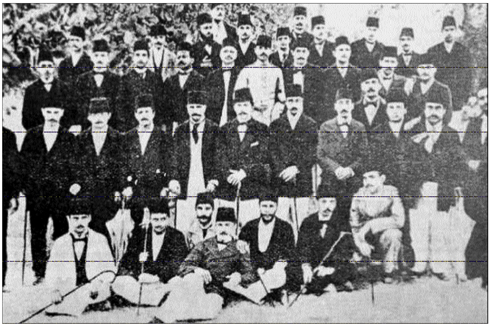
İttihat Terakki Cemiyeti üyeleri.